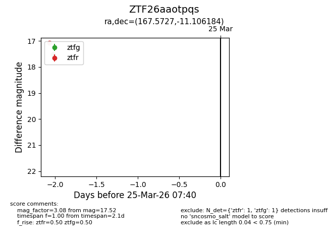
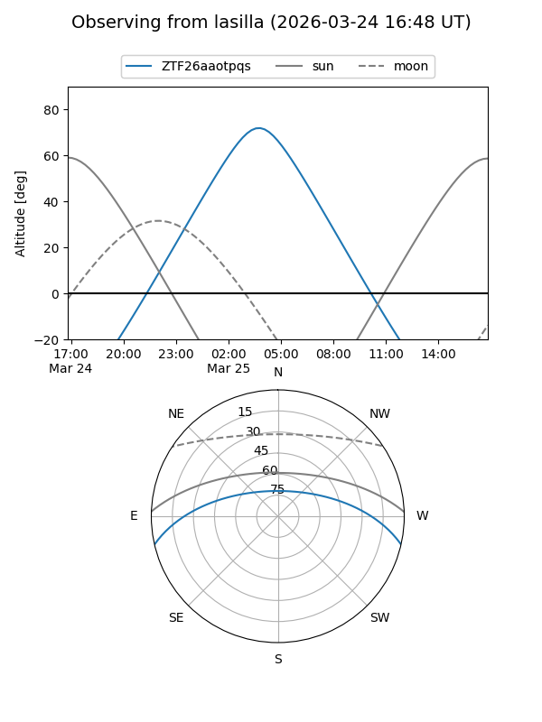
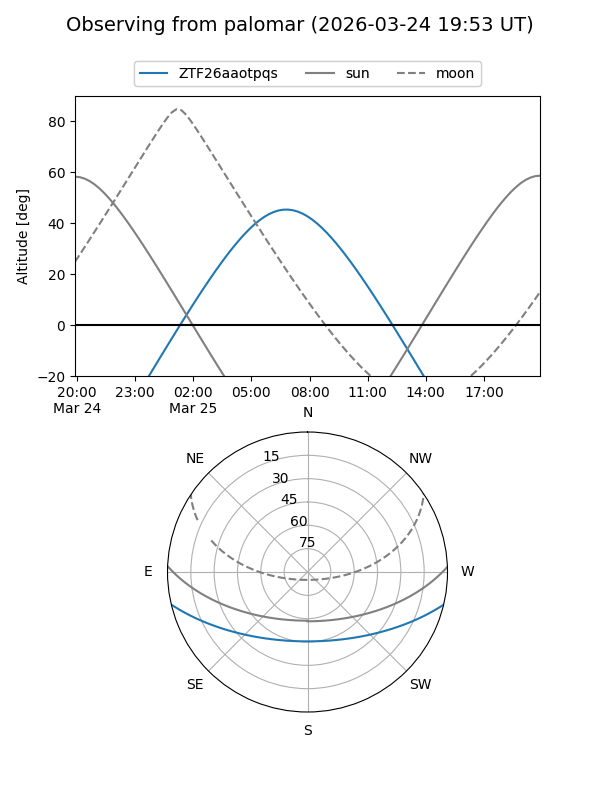

ZTF26aaotpqs
Target ZTF26aaotpqs at 2026-03-25 07:43
Aliases and brokers:
FINK: link
Lasair: link
ALeRCE: link
alt names
ZTF26aaotpqs (ztf,fink_ztf)
Coordinates:
equatorial (ra, dec) = 167.5727,-11.10618
equatorial (HMS+DMS) = 11:10:17.46,-11:06:22.26
galactic (l, b) = (266.8893,+44.57198)
Flags:
Photometry:
last ztfg=17.52, ztfr=17.08
1 ztfg, 1 ztfr detections
Lightcurve

Visibility


Additional plots